Step 3: AI Search and AI Answers¶
Goal: visitors ask a question in their own words and get an answer written from the Northmoor pages, with the source pages listed. You index the site content in a vector database, look at how search by meaning works, and build an Ask Northmoor page.
Before you start: this step adds new Composer packages. Check out the branch of this step and install them:
git checkout 03_ai_search
ddev composer install
ddev drush cache:rebuild
Then:
- to do this step yourself, continue with your site from step 2;
- to skip to the result of this step, run
ddev catch-up.
1. How AI Answers works¶
A normal search finds pages that contain the words you typed. AI Search finds text that has the same meaning, even when it uses other words. AI Answers then lets an AI write an answer from that text.
- Embeddings. An embeddings model turns a piece of text into a long list of numbers (a vector). Texts with a similar meaning get similar vectors. Try it in the Embeddings Explorer.
- Chunks. Pages are too long for one vector, so each page is split into chunks of a few hundred tokens. Each chunk gets its own vector.
- Vector database. The vectors are stored in a database that can find the vectors
nearest to a question. Here, that is PostgreSQL with the pgvector extension, which
runs as the
postgresservice in DDEV. - RAG (retrieval-augmented generation). The question is turned into a vector, the best matching chunks are retrieved, and the AI writes the answer from those chunks only.
Question ─► AI agent ─► RAG search tool ─► vector database (chunks of the Northmoor pages)
▲ │
└──────── best matching chunks ◄────┘
│
▼
Answer with [1] [2] citations + list of sources
2. Apply the recipe¶
Recipe: AI Answers
(ai_recipe_answers). It applies two more recipes:
AI Vector DB Provider for Postgres
and AI Content Search Vector.
ddev drush recipe ../recipes/ai_recipe_answers
| Module | Project | What it does |
|---|---|---|
Search API (search_api) |
Search API | The search framework: servers, indexes, indexing. |
AI Search (ai_search) |
AI Search | A Search API backend that stores content as vectors, and the RAG/Vector Search tool. It used to be part of the AI project; the copy there is deprecated. |
Postgres VDB Provider (ai_vdb_provider_postgres) |
Postgres VDB Provider | Connects AI Search to PostgreSQL with pgvector. |
AI Agents (ai_agents) |
AI Agents | The agent that searches and writes the answer. Already installed in step 1. |
AI Answers (ai_answers) |
AI Answers | The question, answer and sources blocks, and the answer service behind them. |
The recipes create:
- the connection to the vector database, with the DDEV settings (host
postgres, databasedefault, uservectordb); - the Search API server Content Vector, which stores vectors in PostgreSQL;
- the Search API index Content Vector, for all pages;
- the view mode Search index, which decides how a page is rendered for indexing;
- the agent Content Search Agent, and the AI Answers settings for it.
3. Look at the configuration¶
The embeddings model¶
In AI Settings, the
default for Embeddings is amazee.ai with the model embeddings. The recipe uses
this default for the server.
The server¶
Go to Configuration › Search and metadata › Search API.
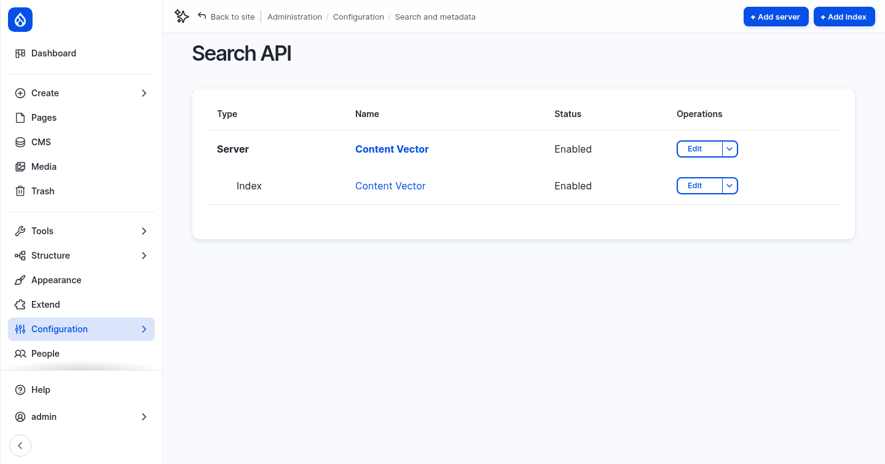
Edit the Content Vector server:
- Backend: AI Search, which indexes items in a vector database.
- Embeddings Engine: amazee.ai
embeddings, with 1024 dimensions. Every chunk and every question gets a vector of this length. Changing the engine means indexing everything again. - Vector Database: Postgres, database
default, collectioncontent_database_index, similarity metric cosine similarity.
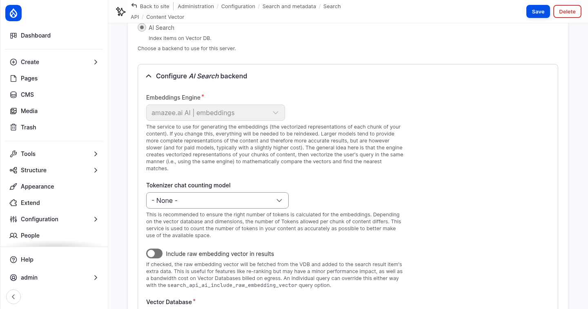
- Advanced Embeddings Strategy Configuration: Enriched Embedding Strategy splits every page into chunks of 300 tokens with 100 tokens of overlap. It adds contextual content (such as the title) to each chunk, up to 30% of the chunk.
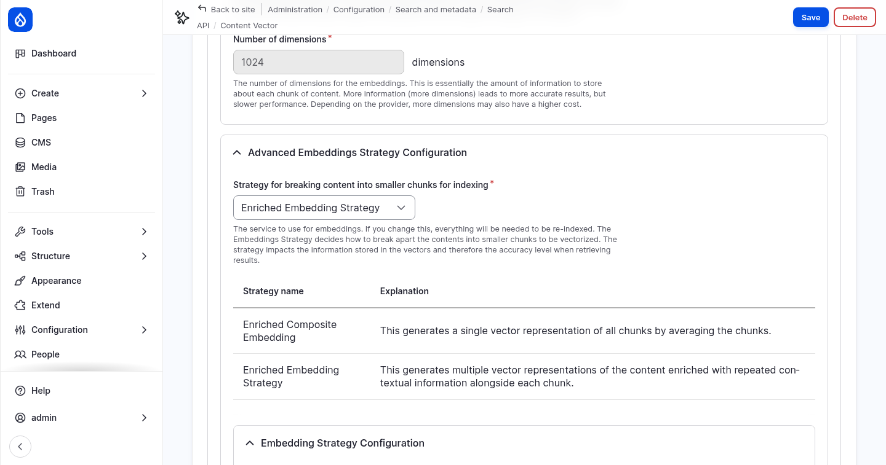
The index¶
Open the fields of the Content Vector index. The Indexing option of each field decides its role in the vector database:
| Indexing option | Meaning | Fields in this index |
|---|---|---|
| Main content | Split into chunks; questions are matched against it. | Rendered HTML output (the page rendered in the Search index view mode) |
| Contextual content | Added to every chunk, so a chunk keeps its context. | Title, URI |
| Filterable attributes | Stored with the chunk for filtering, not embedded. | none |
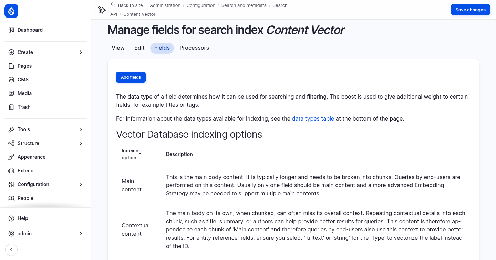
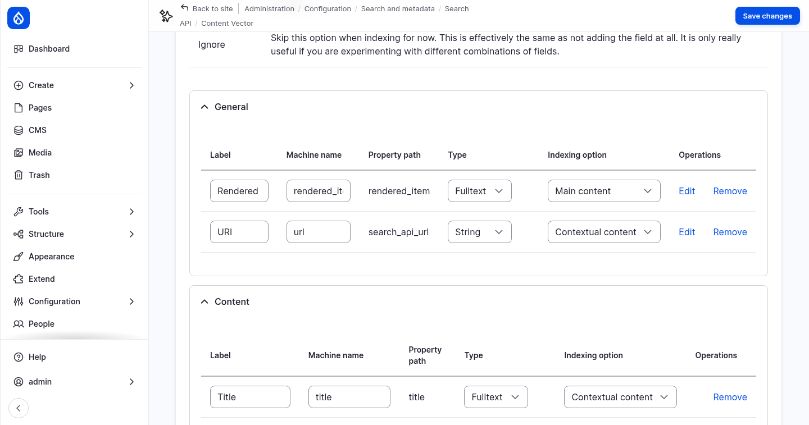
4. Index the content¶
The index is empty. Index all pages:
ddev drush search-api:index content_vector
You can also click Index now on the index page. Every page is sent to the embeddings model, so this takes a few seconds. New and changed pages are indexed when they are saved.
Look at the chunks in PostgreSQL:
ddev exec -s postgres psql -U vectordb -d default -c "select count(*) from content_database_index"
ddev exec -s postgres psql -U vectordb -d default -c "select drupal_long_id, left(regexp_replace(content, '\s+', ' ', 'g'), 70) as chunk from content_database_index order by drupal_long_id limit 5"
The 21 pages become a little more than 100 chunks. drupal_long_id shows the page and
the number of the chunk, for example entity:node/10:en:2 is the third chunk of node 10.
5. Test the search in the AI Explorer¶
You can test search by meaning before any answer is written.
Vector DB Explorer¶
Module: AI Search (ai_search).
Go to Configuration › AI Setup and Configuration › AI API Explorers › Vector DB Explorer:
- Enter
Where can students go to sea?. - Select the index Content Vector and set Results to
5. - Click Run DB Query.
The best match is a chunk of the R/V Cascadia Strait page, although the question does not contain the word "vessel". The Score shows how close each chunk is to the question, where 1 is identical.
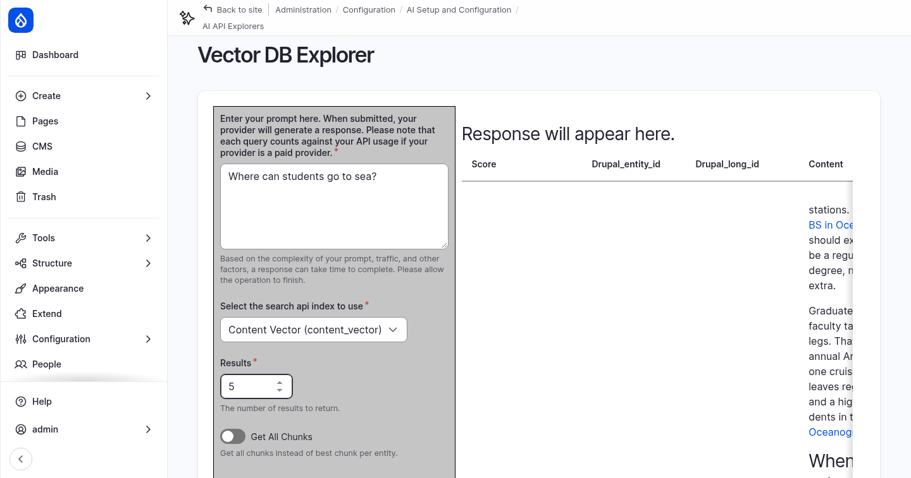
The RAG tool in the Tools Explorer¶
In step 1 you tested tools in the
Tools Explorer.
Choose RAG/Vector Search (ai_search) and enter content_vector as index and
Where can students go to sea? as search_string. Click Run Function.
The result is exactly the text the agent receives when it searches: the best chunks,
each with its page URL and title. min_score (default 0.5) drops chunks that are
not similar enough.
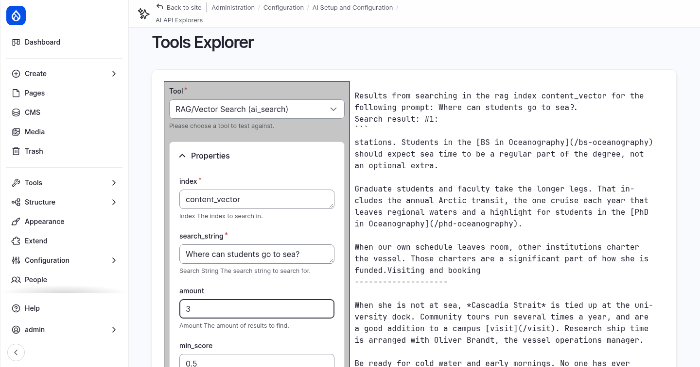
6. The agent and the AI Answers settings¶
The Content Search Agent¶
Module: AI Agents (ai_agents).
Edit the Content Search Agent. Its instructions tell it to answer only from the retrieved content, to say so when the content has no answer, and to cite its sources inline. Its only tool is RAG/Vector Search.
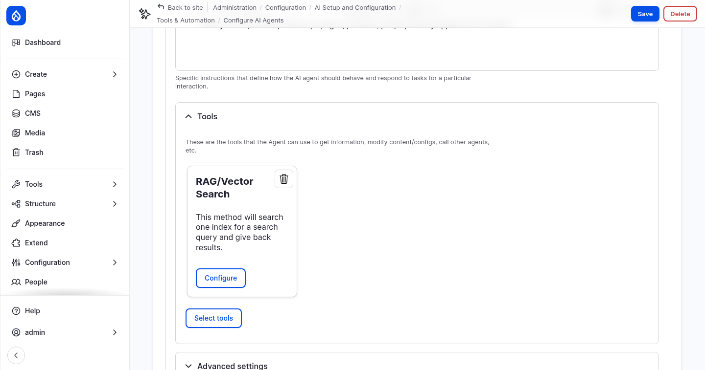
Click Configure on the tool and open Property setup. The property index is
set to Force value content_vector. The AI decides what to search for, but it
cannot search any other index. This is the property setup you saw in step 1.
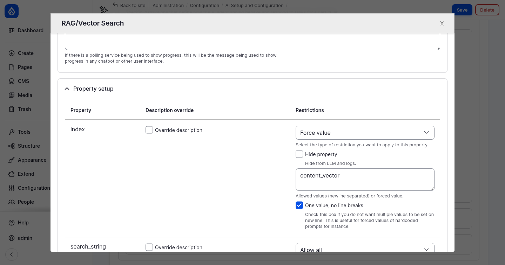
AI Answers settings¶
Module: AI Answers (ai_answers).
Go to Configuration › AI Setup and Configuration › AI Answers agents and edit the Content Search Agent:
| Setting | What it does |
|---|---|
| Provide answers with this agent | Makes the agent available for the AI Answers blocks. The agent needs a RAG tool with a forced index. |
| AI provider | Default uses the default model for Chat with tools. |
| Reference view mode | How each source page is shown in the list of sources. Change it to Card, which is more compact than Teaser. |
| No-answer message | Shown when nothing relevant is found. |
| Accept feedback | Shows thumbs up and down under each answer. The feedback is logged. |
| Conversation retention | How long a conversation is kept for follow-up questions (3600 seconds). |
Click Save.
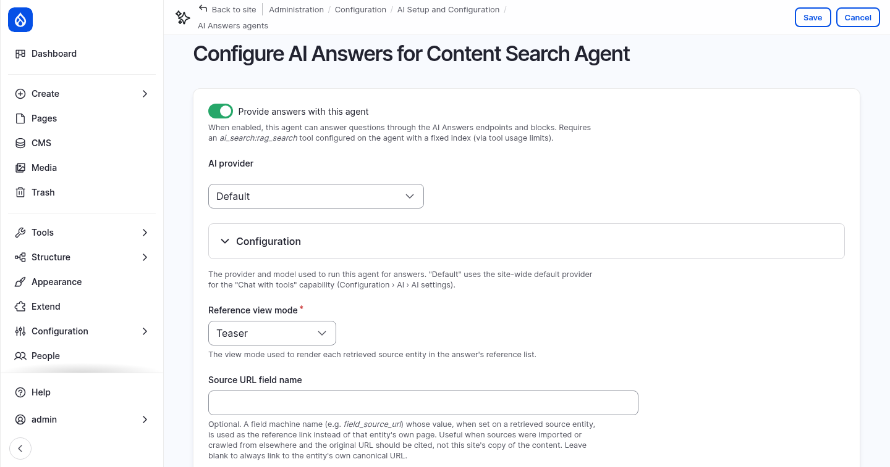
Permission¶
Visitors need the permission Use AI Answers. Give it to Anonymous user and Authenticated user on the AI Answers permissions page, or with:
ddev drush role:perm:add anonymous 'use ai answers'
ddev drush role:perm:add authenticated 'use ai answers'
Without it, every question fails with "Could not reach the answer service".
7. Build the Ask Northmoor page¶
Create the page¶
- Go to Content › Add content › Utility page.
- Title:
Ask Northmoor. - Content: a short introduction, for example: Ask a question about Northmoor University: programs, admissions, research, our facilities or visiting the campus. The answer is written by AI from the pages on this website, and the sources are listed below the answer.
- Description: click Generate description, the button from step 2.
- URL alias: uncheck Generate automatic URL alias and enter
/ask. - Change to: Published. New pages are drafts by default.
- Click Save.
Place the blocks¶
The AI Answers module provides three blocks that work together:
| Block | What it shows |
|---|---|
| AI Answers: Question | The question field, and optional suggested questions. |
| AI Answers: Answer | The answer, follow-up questions and feedback. It decides which agent answers. |
| AI Answers: Sources | The source pages of the answer. |
Go to Structure › Block layout (Olivero) and place these blocks in the Content region. Place the Answer block first, because the other two point to it.
- AI Answers: Answer
- Display title: off
- AI Agent: Content Search Agent
- Show references: off, because the Sources block shows them
- Visibility › Pages:
/ask
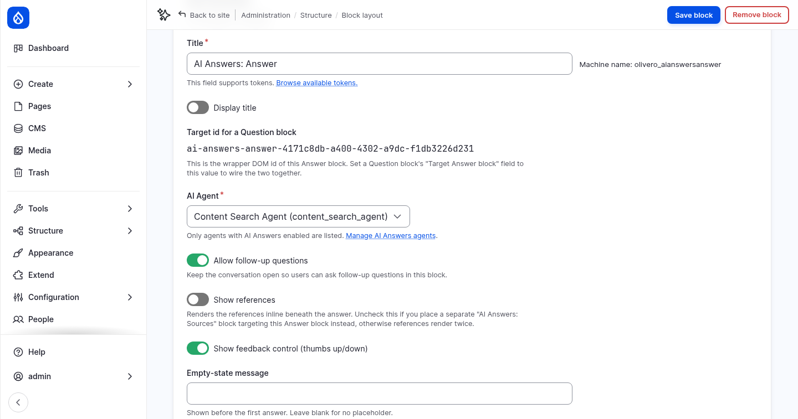
- AI Answers: Question
- Display title: off
- Target Answer block: AI Answers: Answer (content)
- Placeholder:
Ask anything about Northmoor -
Suggested questions, one per line:
Which master's programs can I study? How do I apply? What is the R/V Cascadia Strait used for? -
Visibility › Pages:
/ask
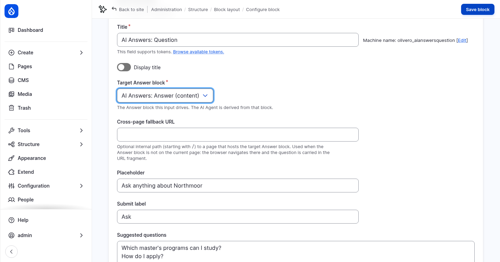
- AI Answers: Sources
- Display title: off
- Target Answer block: AI Answers: Answer (content)
-
Visibility › Pages:
/ask -
Put the blocks in order in the Content region: Main page content, Question, Answer, Sources. Drag them, or click Show row weights and set the weights. Click Save blocks.
Then add a question field to every page, in the footer:
- Place AI Answers: Question in the Footer Top region:
- Title:
Ask Northmoor, with Display title on - Target Answer block: AI Answers: Answer (content)
- Cross-page fallback URL:
/ask. The Answer block is not on the other pages, so the browser goes to/askand takes the question along. - Visibility › Pages:
/ask, with Hide for the listed pages
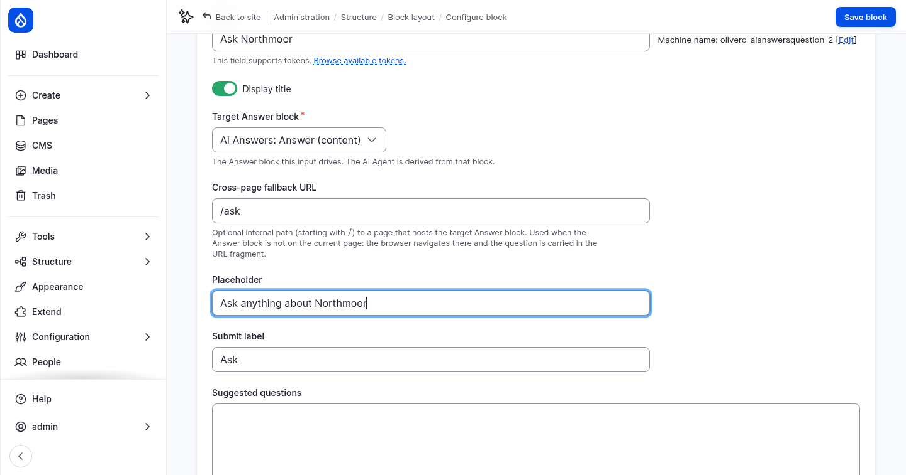
8. Ask questions¶
Log out, or use a private browser window, and open Ask Northmoor. Click a suggested question or type your own:
- Which master's programs can I study?
- How do I apply?
- What is the R/V Cascadia Strait used for?
- Can I study part-time?
- an off-topic question, such as Who won the football world cup in 2014? The agent says that its sources do not cover it.
The answer cites its sources as [1], [2] and so on. The sources are listed below the answer, with the similarity score. Ask a follow-up question in the field under the answer.
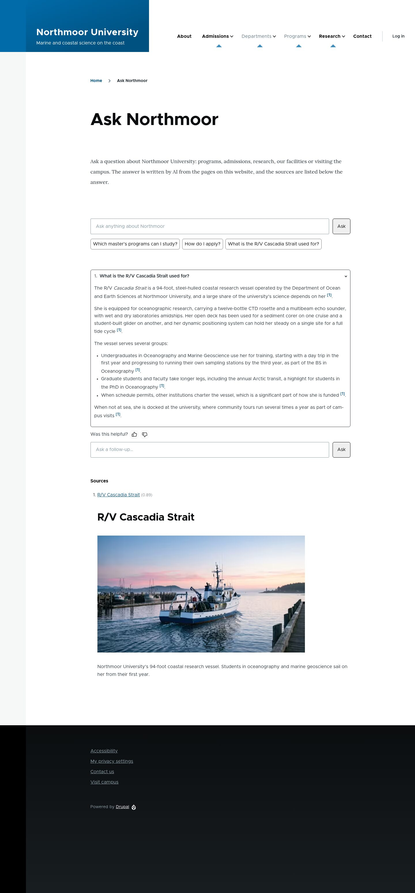
Try the footer field on another page, for example
About Northmoor. It takes you to /ask
with the answer.
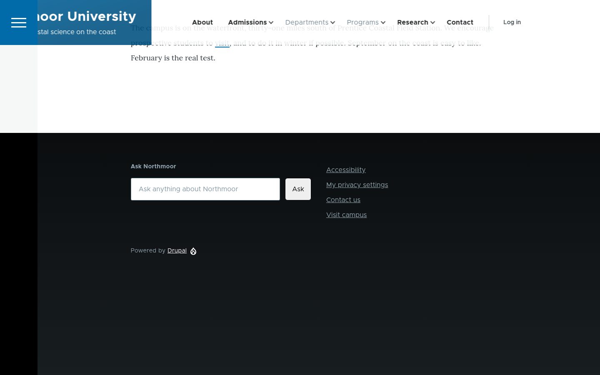
Follow an answer in the AI logs¶
Module: AI Logging (ai_logging).
The Threads tab of the AI logs groups the requests that belong together. It
recognizes them by the beginning of their tags. The chatbot from step 1 tags its requests
with ai_assistant_thread_…, but AI Answers runs its agent without a thread. Each answer
is tagged with ai_agents_runner_… instead, so it does not appear under Threads yet.
- Open the AI Logging Settings and open Conversation threads.
- Add a new line
ai_agents_runner_to Thread tag prefixes, and click Save configuration. - Open AI Logs › Threads as admin. Every answer is now a thread, with the question, the number of requests and the tokens used. This also applies to answers you asked before the change.
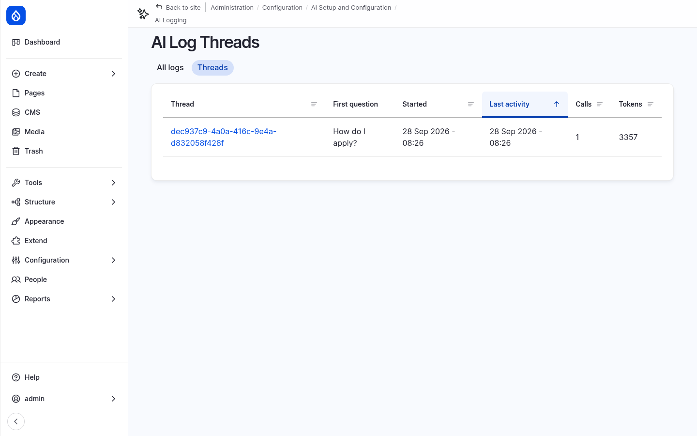
Open a thread to see its requests: the agent's call to the RAG search tool, and the
answer written from the retrieved chunks. The embedding of the question is a separate
request with the tag embeddings, in the list of all logs.
A note on data¶
Questions are sent to the AI provider, together with the retrieved page content. AI Answers keeps each conversation for one hour, for follow-up questions, and logs the feedback. On a real site, mention this in your privacy notice.
More to try¶
- Stricter matching: on the Content Search Agent, open the RAG tool's Property
setup and force min_score to
0.7. Ask a vague question and compare. - Guardrails: attach the Workshop security guardrail set from step 1 to the agent and try a prompt injection in the question field.
- Chunk size: change the chunk size on the server to
150, index again (ddev drush search-api:clear content_vector && ddev drush search-api:index content_vector) and compare the answers. - Watch indexing: change a page, save it, and search for the new text in the Vector DB Explorer. Pages are indexed when they are saved.
Checkpoint¶
You now have:
- the Northmoor pages indexed as vectors in PostgreSQL
- search by meaning in the Vector DB Explorer and the RAG tool
- an Ask Northmoor page at
/askthat answers questions with sources, for all visitors - a question field in the footer of every page
If something does not work, reset your site to the end of this step:
git checkout 03_ai_search
ddev catch-up
ddev catch-up also indexes the content again, because the vectors are stored in
PostgreSQL and not in the database dump.